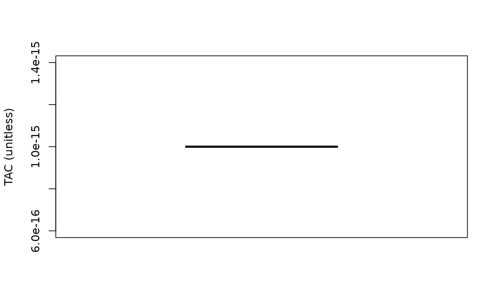

Several reference MPs for your operating model to use in the management strategy
evaluation. FMSYref (and related) assume perfect information about FMSY (FMSY
is taken from the operating model stored at Data@Misc$ReferencePoints$ByYear$FMSY),
and set an effort limit (TAE) so that F=FMSY (or some fraction of FMSY) in
each year the MP is applied. NFref sets annual catch to zero and is used
for looking at variability in stock with no fishing.
FMSYref(x, Data, reps = 100, plot = FALSE)
FMSYref50(x, Data, reps = 100, plot = FALSE)
FMSYref75(x, Data, reps = 100, plot = FALSE)
NFref(x, Data, reps = 100, plot = FALSE)
curEref(x, Data, reps = 100, plot = FALSE)A position in the data object
A data object
The number of stochastic samples of the MP recommendation(s)
Logical. Show the plot?
An object of class Rec with the TAC slot populated with a numeric vector of length reps
Note that you can out-perform FMSYref easily. The requirement for fixed
F is actually quite strict and is by no means the upper limit in terms of
yield. Don't panic if your method beats this one for yield, especially for
short-lived species of high temporal variability in productivity!
FMSYref: A reference FMSY method that fishes at FMSY
FMSYref50: A reference FMSY method that fishes at 50% of FMSY
FMSYref75: A reference FMSY method that fishes at 75% of FMSY
NFref: A reference MP that sets annual catch to almost zero (1e-15)
curEref: A reference MP that keeps fishing effort at the level of the last
historical year
See Data for information on the Data object
FMSYref(1, MSEtool::SimulatedData, plot=TRUE)
#> Effort
#> 0.7600795
FMSYref50(1, MSEtool::SimulatedData, plot=TRUE)
#> Effort
#> 0.3800398
FMSYref75(1, MSEtool::SimulatedData, plot=TRUE)
#> Effort
#> 0.5700596
NFref(1, MSEtool::SimulatedData, plot=TRUE)

#> TAC (median)
#> 1e-15
curEref(1, MSEtool::SimulatedData)
#> Effort
#> 1